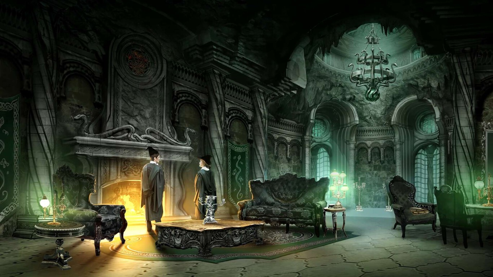

Slytherin
Salazar Slytherin

La Casa Slytherin es una de las cuatro casas en la escuela de magia Hogwarts. Fundada por Salazar Slytherin, esta casa valora la astucia, la ambición y la determinación en sus estudiantes. Los miembros de Slytherin suelen ser conocidos por su ingenio y habilidades para alcanzar sus objetivos. Aunque a veces se asocia con la pureza de la sangre, no todos los Slytherins comparten esta creencia, ya que la casa acoge a estudiantes de diversos orígenes mágicos. Los colores de la casa son verde y plata, y su animal representativo es la serpiente. Slytherin tiene una larga historia en Hogwarts y ha producido muchos magos y brujas destacados a lo largo de los años.
Un alumno de Slytherin suele ser astuto y determinado, con una ambición ardiente que impulsa su búsqueda de éxito y poder. Tienen una mente aguda y estratégica, capaz de adaptarse a diversas situaciones para alcanzar sus objetivos. La lealtad hacia su casa y hacia sí mismos es fundamental, y están dispuestos a hacer lo que sea necesario para alcanzar el éxito, incluso si eso implica tomar decisiones difíciles o enfrentarse a desafíos morales. A menudo son percibidos como líderes natos, con una capacidad innata para influir en los demás y para salir adelante en situaciones adversas. La determinación y la astucia son rasgos centrales en su personalidad, lo que les permite destacarse en cualquier ámbito que se propongan.
Su sala común está ubicada bajo el lago, el acceso se encuentra tras unos laberínticos pasillos, en las mazmorras, tras una puerta, escaleras abajo del vestíbulo.
